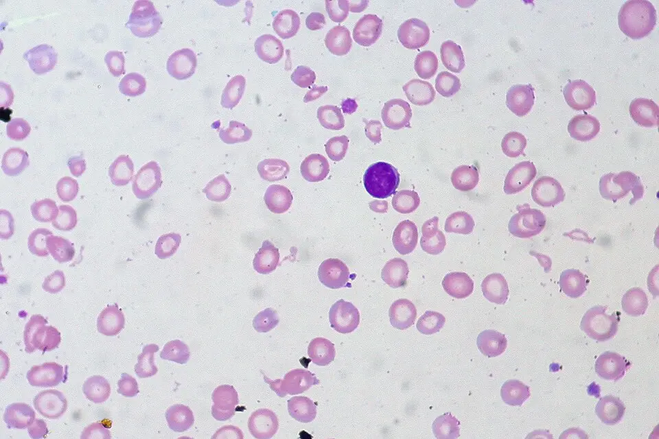

DX.10 — Anémie, hypothyroïdie, diabète déséquilibré
Abréviations : les sigles suivants désignent AIPS = information professionnelle suisse des médicaments ; ATC = classification anatomique, thérapeutique et chimique ; DCI = dénomination commune internationale. Ces autres sigles figurent aussi CIM-10 = Classification internationale des maladies, 10e révision ; PROFILES = catalogue suisse des objectifs de formation médicale ; Hb = hémoglobine. D'autres sigles apparaissent encore VGM = volume globulaire moyen ; FSC = formule sanguine complète ; CRP = protéine C réactive. Plusieurs sigles signifient TSAT = saturation de la transferrine ; TSH = thyréostimuline ; T4 = thyroxine ; T3 = triiodothyronine ; TPO = thyroperoxydase. Ces abréviations désignent HbA1c = hémoglobine glyquée ; DFGe = débit de filtration glomérulaire estimé ; ETA = Société européenne de la thyroïde. Les sigles restants désignent AFP = American Family Physician, revue de l'American Academy of Family Physicians ; ADA = Association américaine du diabète. Ces dernières abréviations signifient EASD = Association européenne pour l'étude du diabète ; BSG = British Society of Gastroenterology (Société britannique de gastroentérologie). Ces sigles figurent enfin JAMA = Journal of the American Medical Association ; DKA = acidocétose diabétique ; HHS = état hyperglycémique hyperosmolaire. Les sigles suivants désignent IL-6 = interleukine 6 ; ECG = électrocardiogramme ; LAMal = loi fédérale sur l'assurance-maladie ; LAA = loi fédérale sur l'assurance-accidents. Ces autres sigles figurent aussi LAI = loi fédérale sur l'assurance-invalidité ; OFSP = Office fédéral de la santé publique. D'autres sigles apparaissent encore DX = diagnostic différentiel numéroté de la liste ; ADN = acide désoxyribonucléique ; PA = pression artérielle. Plusieurs sigles signifient FC = fréquence cardiaque ; CFV = Commission fédérale pour les vaccinations ; GI = gastro-intestinal ; PL = ponction lombaire. Ces abréviations désignent i.v. = intraveineux ; i.m. = intramusculaire ; IMC = indice de masse corporelle ; GAD = décarboxylase de l'acide glutamique. Les sigles restants désignent CGM = mesure continue du glucose ; U = unité d'insuline ; h = heure ; mmol = millimole. Ces dernières abréviations signifient mU = milliunité ; L = litre ; fL = femtolitre ; µg = microgramme ; kg = kilogramme.
1. Définition
Ce diagnostic réunit trois maladies chroniques fréquentes qui se révèlent par une fatigue ou un malaise. L'anémie est une baisse de l'hémoglobine sous le seuil du sexe. L'hypothyroïdie est un déficit en hormones thyroïdiennes ; le diabète déséquilibré est une hyperglycémie mal contrôlée. Chacune est un diagnostic biologique.1,2,5
Chaque maladie se décline en formes que le diagnostic doit préciser.
• anémie, carence en fer, anémie ferripriveLa carence en fer réduit les réserves, avec ou sans anémie. Anémie ferriprive : carence assez profonde pour baisser l'hémoglobine. Une carence symptomatique sans anémie se traite aussi.3.
• hypothyroïdie clinique et subcliniqueLa forme clinique associe TSH élevée et T4 libre basse ; la forme subclinique associe TSH élevée et T4 libre normale. La classe TSH 4.0 à 10.0 mU/L est légère, au-dessus de 10 mU/L elle est franche.6.
• diabète déséquilibré, acidocétose, état hyperosmolaireDéséquilibre : glycémies hors cible sans acidose. L’acidocétose associe hyperglycémie, cétones et acidose, surtout dans le type 1. État hyperosmolaire : hyperglycémie extrême avec déshydratation, sans cétose marquée.8
2. Épidémiologie (Suisse, puis Europe)
Dans la région de Bern-Mittelland, la prévalence du diabète chez l'adulte est estimée à 3,97 % en 2010 puis à 3,65 % en 2014 (Reichenbach 2021)4. Cette estimation porte sur les adultes de la région, d'après les listes de l'hôpital universitaire et d'une assurance4. Dans le monde occidental, 10 à 15 % des femmes en âge de procréer ont une anémie ferriprive (Gattermann 2021)5. La prévalence mondiale de l'hypothyroïdie varie de 0,3 % à 12 % selon l'apport en iode (Chaker 2025).2
| Thème | Ce qui est observé | Source (parenthèse) | Dénominateur |
|---|---|---|---|
| Carence en fer en Suisse | Les médecins de premier recours voient souvent cette carence sous forme de fatigue non spécifique. | (Nowak 2019)3 | Patients de médecine de premier recours |
| Hypothyroïdie : sexe et âge | Elle est plus fréquente chez la femme et la personne âgée. | (Chaker 2025)2 | Population générale |
| Hypothyroïdie : cause | La thyroïdite de Hashimoto cause jusqu'à 85 % des cas2. | (Chaker 2025)2 | Cas d'hypothyroïdie où l'apport en iode est suffisant |
| Groupes à risque | Les femmes en âge de procréer, les personnes âgées et les diabétiques de type 1 (maladie auto-immune associée) sont les plus concernés ; le dépistage thyroïdien se limite aux groupes à risque, tels les diabétiques de type 12. | (Chaker 2025)2 | Personnes à risque |
| Mortalité | Le coma myxœdémateux tue jusqu'à 30 % des patients2. | (Chaker 2025)2 | Patients en coma myxœdémateux |
| Anémie ferriprive : lésion digestive | Environ un tiers ont une lésion digestive. | (Snook 2021)7 | Hommes et femmes ménopausées avec une anémie ferriprive |
| Enjeux | Les enjeux sont le diagnostic précoce, le dépistage de la cause et l'équilibre du diabète. | (Gattermann 2021)5 | Les trois maladies |
3. Physiopathologie
A. Anémie ferriprive. Amorce (niveau moléculaire) : le fer manque, la synthèse de l'hème et de l'hémoglobine baisse. Développement (niveau cellulaire) : les globules rouges sont plus petits et plus pâles (microcytose). Installation (niveau tissulaire) : la capacité de transport de l'oxygène diminue, les tissus manquent d'oxygène. Clinique : le patient montre fatigue, pâleur, dyspnée et tachycardie. Maintien : une perte de sang chronique ou une malabsorption épuise les réserves.5,3
Anémie inflammatoire.
L'interleukine 6Cytokine de l'inflammation qui stimule le foie à produire l'hepcidine. augmente l'hepcidineHormone du foie qui bloque l'absorption intestinale du fer et son relargage macrophagique.. Le fer reste bloqué en réserve ; l'intestin n'en absorbe plus. La ferritine est élevée malgré une anémie.5
Anémie par carence en vitamine B12. La B12 est nécessaire à la synthèse de l'ADN. Sans elle, les précurseurs des globules rouges grossissent sans se diviser : macrocytose. Une atteinte du système nerveux peut s'y associer. La metformine peut abaisser la B12.9
B. Hypothyroïdie. Amorce (niveau moléculaire) : l'auto-immunité (thyroïdite de Hashimoto) cible la thyroperoxydase. Développement (niveau cellulaire) : les thyréocytes sont détruits, la synthèse de T4 et de T3 baisse. Installation (niveau tissulaire) : le métabolisme basal ralentit dans tous les organes. Clinique : fatigue, frilosité, prise de poids, constipation. Maintien : la TSH monte pour compenser, jusqu'à l'épuisement de la glande.2
C. Diabète déséquilibré. Amorce (niveau moléculaire) : l'insuline manque ou la cellule y résiste ; le glucose, qui n'entre plus dans le muscle ni dans le tissu adipeux, s'accumule dans le sang. Développement (niveau cellulaire) : le foie produit encore du glucose. Installation (niveau tissulaire) : la glycémie dépasse le seuil rénal, le glucose passe dans l'urine et entraîne l'eau (diurèse osmotique). Clinique : le patient montre polyurie, soif, fatigue et perte de poids. Maintien : la déshydratation et l'hyperglycémie aggravent la résistance à l'insuline.8
Complications. Sans insuline, la lipolyse produit des cétones et une acidose : c'est l'acidocétose. Dans l'état hyperosmolaire, l'insuline suffit à éviter la cétose mais pas l'hyperglycémie extrême. L'hypothyroïdie non traitée peut décompenser en coma myxœdémateux. L'hypothyroïdie aggrave l'insulinorésistance du diabétique.2,8
| Perturbation | Exploration qui la montre | Thérapeutique et mécanisme |
|---|---|---|
| Carence en fer, synthèse d'hème basse | Ferritine, TSAT, VGM bas | Le fer oralDCI : hydroxyde de fer(III)-polymaltose (Maltofer®, n° AIPS 30124). Classe : antianémique, fer trivalent oral (ATC B03AB05). Groupe : préparations orales de fer (ATC B03A)30124. Chefs de file : sulfate ferreux, fumarate ferreux, fer(III)-polymaltose. Indications : carence en fer sans anémie ; anémie ferriprive. Posologie AIPS : adolescent dès 12 ans et adulte, anémie ferriprive, 100 à 300 mg de fer par jour ; carence sans anémie, 50 à 100 mg de fer par jour ; en l'absence de hausse de l'hémoglobine d'environ 2 à 3 g/dL en 3 semaines, revoir le traitement.30124 restaure les réserves ; le fer intraveineuxDCI : carboxymaltose ferrique (Ferinject®, n° AIPS 57851). Classe : fer parentéral (ATC B03AC). Groupe : préparations parentérales de fer (ATC B03AC)57851. Chefs de file : carboxymaltose ferrique, saccharose ferrique, dérisomaltose ferrique. Indications : carence martiale de l'adulte lorsque le fer oral est insuffisant, inefficace ou impossible. Posologie AIPS : besoins calculés par la formule de Ganzoni ou le schéma simplifié ; dose unique maximale de 15 mg de fer/kg en injection, 20 mg/kg en perfusion, 1000 mg ; dose cumulée maximale de 1000 mg par semaine ; surveiller au moins 30 minutes ; hémoglobine contrôlée au plus tôt 4 semaines après la dernière dose.57851 contourne l'intestin57851. |
| Carence en B12, maturation nucléaire bloquée | VGM élevé, vitamine B12 basse | La vitamine B12DCI : cyanocobalamine (Vitarubin®, n° AIPS 21672). Classe : vitamine B12 (ATC B03BA01). Groupe : vitamine B12 et dérivés (ATC B03BA)21672. Chefs de file : cyanocobalamine, hydroxocobalamine. Indications : anémie pernicieuse avec ou sans symptômes neurologiques ; anémie macrocytaire par manque de vitamine B12. Posologie AIPS : 1000 µg par voie intramusculaire une fois par semaine jusqu'à normalisation de la formule sanguine ; en cas de trouble d'absorption, entretien à vie de 1000 µg une fois par mois.21672 rétablit la synthèse d'ADN21672. |
| Inflammation, hepcidine élevée | Ferritine élevée, CRP élevée, TSAT basse | Traiter la maladie inflammatoire ; le fer seul est peu efficace. |
| Déficit en T4 et T3 | TSH élevée, T4 libre basse | La lévothyroxineDCI : lévothyroxine sodique (Euthyrox®, n° AIPS 54949). Classe : hormone thyroïdienne de synthèse (ATC H03AA01). Groupe : hormones thyroïdiennes (ATC H03AA)54949. Chefs de file : lévothyroxine, liothyronine. Indications : substitution de l'hypothyroïdie de toute origine ; hypothyroïdie congénitale ; suppression après cancer de la thyroïde ; goitre. Posologie AIPS : hypothyroïdie, dose initiale de 25 à 50 µg par jour, augmentée toutes les 2 à 4 semaines de 25 à 50 µg ; dose d'entretien de 100 à 200 µg par jour ; prise le matin à jeun, au moins une demi-heure avant le petit-déjeuner ; sujet âgé ou cardiopathie, débuter à 25 µg.54949 remplace la T4 et rétablit le métabolisme54949. |
| Insulinopénie ou insulinorésistance | Glycémie, HbA1c | La metformineDCI : metformine (Glucophage®, n° AIPS 26061). Classe : antidiabétique oral, biguanide (ATC A10BA02). Groupe : biguanides (ATC A10BA)26061. Chefs de file : metformine. Indications : diabète de type 2, surtout avec excès pondéral, lorsque l'alimentation et l'activité physique ne suffisent pas. Posologie AIPS : débuter par 500 à 1000 mg par jour, augmenter de 500 mg tous les 5 à 7 jours, maximum 3000 mg par jour, dose d'entretien moyenne de 1500 à 2000 mg par jour ; arrêt immédiat si clairance ou DFGe sous 30 mL/min ; arrêt 48 h avant un produit de contraste iodé si clairance sous 60 mL/min.26061 réduit la production hépatique de glucose ; l'insuline basaleDCI : insuline glargine (Lantus®, n° AIPS 55346). Classe : insuline analogue d'action prolongée (ATC A10AE04). Groupe : insulines et analogues d'action prolongée (ATC A10AE)55346. Chefs de file : glargine, détémir, dégludec. Indications : diabète sucré nécessitant de l'insuline, dès l'âge de 2 ans. Posologie AIPS : une injection par jour, au même moment chaque jour ; dose initiale individuelle ; en schéma basal-bolus, 40 à 60 % de la dose journalière ; pas l'insuline de choix en acidocétose.55346 remplace l'insuline2. |
| Acidocétose ou état hyperosmolaire | Cétones, gaz du sang, osmolalité | Les cristalloïdesDCI : solutés cristalloïdes isotoniques (ATC B05BB01). Classe : soluté de remplissage. Groupe : solutions électrolytiques i.v. (ATC B05BB). Chefs de file : sérum physiologique, Ringer lactate. Indications : déshydratation, remplissage. Posologie AIPS : Natrium chloratum «Bichsel» 0,9 % (n° 29800) : chez l'adulte, 9 mL/min, sans dépasser 2000 mL par jour en routine ni 2000 mL/h dans le choc.23 corrigent le volume ; l'insuline rapide (NovoRapidDCI : insuline asparte (NovoRapid®, n° AIPS 55045). Classe : insuline analogue d'action rapide (ATC A10AB05). Groupe : insulines et analogues d'action rapide (ATC A10AB)55045. Chefs de file : asparte, lispro, glulisine. Indications : diabète sucré nécessitant un traitement insulinique. Posologie AIPS : besoins de 0,5 à 1,0 U/kg par jour chez l'adulte ; en schéma basal-bolus, 50 à 70 % des besoins par l'insuline rapide55045. En cas d'acidocétose, on suit le protocole de l'hôpital.) i.v. stoppe la cétogenèse. |
4. Démarche diagnostique
L'ordre des étapes impose la gravité d'abord, la fréquence ensuite. Une fatigue chronique se bilante après exclusion des urgences.8,2
Étape 1. Drapeaux rouges : chacun impose l'urgence.
🚩 R1. Somnolence, hypothermie et bradycardie chez un hypothyroïdien connu ou suspectéLe coma myxœdémateux est une décompensation multi-organe avec trouble de la conscience, insuffisance respiratoire et hypothermie. Il tue jusqu'à 30 % des patients.2 : soins intensifs, hormone thyroïdienne i.v. sous avis endocrinologue.
🚩 R2. Polyurie, soif, vomissements, respiration profonde et haleine acétonéeL'acidocétose menace la vie : le manque d'insuline produit des cétones et une acidose. La respiration profonde compense l'acidose. : on mesure glycémie, cétones et gaz du sang, puis on adresse aux urgences.
🚩 R3. Confusion avec déshydratation majeure et glycémie très élevéeL'état hyperosmolaire déshydrate le cerveau : confusion ou coma sans cétose marquée. : on mesure glycémie et osmolalité, puis on adresse aux urgences.
🚩 R4. Anémie avec dyspnée, angor ou syncopeL'anémie sévère prive le cœur d'oxygène : ischémie myocardique possible. : on prescrit ECG, troponine et Hb urgente, puis on sollicite un avis.
🚩 R5. Méléna, hématémèse ou rectorragie avec anémieLe saignement digestif actif épuise le volume et le fer. : hospitalisation, endoscopie.
🚩 R6. Anémie macrocytaire avec paresthésies ou troubles de la marcheLa carence en B12 atteint la moelle et les cordons postérieurs ; l'atteinte neurologique n'est pas toujours réversible.9 : B12 sans attendre, avis.
🚩 R7. Anémie avec fièvre, pétéchies ou cytopénies associéesPlusieurs lignées touchées évoquent une atteinte médullaire ou une leucémie. : FSC, frottis, avis hématologique urgent.
🚩 R8. Hypoglycémie chez un patient traitéUne insuline ou un sulfonylurée peut abaisser la glycémie sous la normale : confusion, convulsions. : resucrage rapide, glycémie capillaire.
🚩 R9. Anémie ferriprive inexpliquée de l'homme ou de la femme ménopauséeUn tiers de ces patients ont une lésion digestive, dont un cancer.7 : endoscopie digestive.
Étape 2. Sans urgence : la démarche suit des étapes graduelles.
1. Fatigue sans signe grave : mesurer constantes, poids, glycémie capillaire.
2. On demande un bilan de première ligne : FSC, ferritine, CRP, TSH, glycémie à jeun, HbA1c (point 9).3,2
3. Si anémie : classer par VGM (microcytaire, normocytaire, macrocytaire) ; chercher la cause. Piège : la ferritine augmente avec l'inflammation.
4. Si TSH élevée, on refait TSH et T4 libre avec anticorps anti-TPO après 2 à 3 mois avant de traiter une forme légère6.
5. Si glycémie élevée : confirmer, classer le type, chercher le facteur de déséquilibre (infection, oubli du traitement, nouveau médicament).8
6. Quand on trouve une maladie, on cherche les autres : metformine et B12, diabète de type 1 et thyroïde8.
| Diagnostic | Signe ou examen qui tranche | Piège |
|---|---|---|
| Acidocétose | Cétones élevées, pH bas, glycémie élevée | Glycémie parfois modérée en cas de jeûne. |
| Coma myxœdémateux | TSH très haute, T4 libre basse, hypothermie | Une infection déclenche souvent l'épisode. |
| Anémie par saignement digestif | Méléna, ferritine basse, endoscopie | Anémie lentement installée, bien tolérée. |
| Carence en B12 avec atteinte neurologique | Vitamine B12 basse, acide méthylmalonique | Anémie parfois absente, neuropathie présente. |
| Leucémie ou aplasie | Cytopénies, frottis anormal | Débute comme une simple anémie. |
| Insuffisance surrénalienne (DX.15)8 | Hypotension, hyponatrémie | Elle accompagne les maladies auto-immunes et se confond avec l'hypothyroïdie. |
5. Anamnèse ciblée et drapeaux rouges
Chaque question repose sur une raison physiopathologique et modifie la décision.
Les questions clés cherchent les signes d'anémie et la cause d'une perte de fer. Elles explorent ensuite la thyroïde, le diabète, les traitements et la grossesse.
| Drapeau rouge | Signification | Action immédiate |
|---|---|---|
| Somnolence, hypothermie, bradycardie | Coma myxœdémateux, décompensation multi-organe qui tue jusqu'à 30 % des patients2 | Soins intensifs ; hormone thyroïdienne i.v. sous avis endocrinologue. |
| Polyurie, soif, vomissements, respiration profonde, haleine acétonée | Acidocétose : le manque d'insuline produit des cétones et une acidose8 | Glycémie, cétones, gaz du sang ; urgences. |
| Confusion, déshydratation majeure, glycémie très élevée | État hyperosmolaire : le cerveau se déshydrate8 | Glycémie, osmolalité ; urgences. |
| Anémie avec dyspnée, angor ou syncope | Ischémie myocardique possible | ECG, troponine, Hb urgente ; avis. |
| Méléna, hématémèse ou rectorragie avec anémie | Saignement digestif actif : le volume et le fer s'épuisent | Hospitalisation ; endoscopie. |
| Anémie macrocytaire avec paresthésies ou troubles de la marche | Carence en B12 avec atteinte neurologique, pas toujours réversible9 | Vitamine B12 sans attendre ; avis. |
Drapeaux rouges actionnables. Les neuf drapeaux du point 4 imposent urgence, imagerie ou avis spécialisé. Hospitaliser tout patient avec acidocétose, état hyperosmolaire, coma myxœdémateux, anémie avec ischémie ou saignement actif.
6. Examen physique ciblé, région par région
Le normal vient d'abord. Les signes sont peu sensibles : un examen normal n'exclut aucune des trois maladies.2,3
L'examen ciblé de l'anémie, de l'hypothyroïdie et du diabète suit cet ordre : constantes et poids ; peau et muqueuses ; cou et thyroïde. Il se poursuit par cœur et poumons ; abdomen et toucher rectal ; puis examen neurologique et pieds. Chaque fenêtre décrit le normal, puis le signe d'anémie, de dysthyroïdie ou de diabète.
7. Approche syndromique
Quatre syndromes sont décrits. Chacun sépare signes fonctionnels et signes physiques. Le geste et le mécanisme se lisent en regard.
7.1 Le syndrome anémique traduit le manque d'oxygène tissulaire
| Type | Signe et définition | Geste de recherche | Mécanisme |
|---|---|---|---|
| Fonctionnel | FatigueFatigue disproportionnée à l'effort. | Demander l'effet sur le travail et les escaliers. | Moins d'oxygène livré aux muscles. |
| Fonctionnel | Dyspnée d'effortEssoufflement à l'effort modéré. | Demander le nombre d'étages montés sans arrêt. | Hyperventilation compensatrice. |
| Physique | PâleurPeau et conjonctives pâles. | Inspecter les conjonctives à la lumière du jour. | Vasoconstriction cutanée et moins d'hémoglobine. |
| Physique | TachycardiePouls rapide au repos. | Compter le pouls radial une minute. | Le débit cardiaque compense la perte de capacité de transport. |
7.2 Le syndrome carentiel signe le fer ou la B12 manquants
| Type | Signe et définition | Geste de recherche | Mécanisme |
|---|---|---|---|
| Fonctionnel | Pica et jambes sans reposEnvie de manger de la glace ; besoin de bouger les jambes. | Interroger sur les envies alimentaires et le sommeil. | Carence en fer au niveau tissulaire. |
| Physique | Koïlonychie et glossiteOngles en cuillère ; langue lisse et rouge. | Inspecter les ongles et la langue. | Perte d'enzymes à fer dans les épithéliums. |
| Physique | Pallesthésie réduitePerte de la sensibilité vibratoire. | Appliquer un diapason sur la malléole. | Démyélinisation par carence en B12.9 |
7.3 Le syndrome hypothyroïdien traduit un métabolisme ralenti
| Type | Signe et définition | Geste de recherche | Mécanisme |
|---|---|---|---|
| Fonctionnel | FrilositéIntolérance au froid. | Demander si le patient a froid quand les autres sont à l'aise. | Moins de thermogenèse. |
| Fonctionnel | Constipation et prise de poidsTransit lent ; poids en hausse. | Demander les selles et la courbe de poids. | Ralentissement digestif et métabolique. |
| Physique | BradycardiePouls lent. | Compter le pouls radial une minute. | Moins d'effet des hormones thyroïdiennes sur le cœur. |
| Physique | Réflexe achilléen lentRelâchement retardé. | Percuter le tendon d'Achille, patient à genoux sur une chaise. | Ralentissement de la relaxation musculaire. |
7.4 Le syndrome hyperglycémique traduit la diurèse osmotique
| Type | Signe et définition | Geste de recherche | Mécanisme |
|---|---|---|---|
| Fonctionnel | Polyurie et polydipsieUrines abondantes ; soif intense. | Demander le volume et le réveil nocturne pour uriner. | Le glucose urinaire entraîne l'eau. |
| Fonctionnel | Perte de poidsAmaigrissement involontaire. | Comparer au poids antérieur. | Catabolisme faute d'insuline. |
| Physique | DéshydratationMuqueuses sèches, hypotension. | Inspecter la langue ; mesurer la PA couché puis debout. | Perte hydrique et sodée. |
| Physique | Haleine acétonéeOdeur de pomme ou de vernis. | Sentir l'haleine ; chercher les cétones. | Cétones volatiles en acidocétose. |
8. Diagnostic positif et critères
Chaque maladie est biologique. Les critères datent de 2013 pour la thyroïde (ETA) et de 2026 pour le diabète (ADA)6,8. Une plainte de fatigue ne suffit jamais au diagnostic.
| Entité | Critères | Ce qui ne suffit pas |
|---|---|---|
| Anémie | Hb sous le seuil du sexe : environ 120 g/L chez la femme non enceinte, 135 g/L chez l'homme (cinquièmes centiles, 2024).10 | Une pâleur sans mesure d'Hb. |
| Carence en fer | Ferritine < 30 µg/L sans inflammation ; ferritine de 30 à 50 µg/L avec TSAT < 20 % évoque la carence (consensus suisse, 2019).3 | Une ferritine normale en cas d'inflammation. |
| Hypothyroïdie clinique | TSH élevée avec T4 libre basse.2 | Les symptômes seuls, car ils sont non spécifiques. |
| Hypothyroïdie subclinique (ETA 2013)6 | TSH élevée, T4 libre normale ; classes TSH 4.0 à 10.0 mU/L et > 10 mU/L ; confirmer à 2 à 3 mois.6 | Une TSH isolée légèrement élevée chez le sujet très âgé. |
| Diabète (ADA 2026)8 | Glycémie à jeun ≥ 7,0 mmol/L, ou HbA1c ≥ 48 mmol/mol, ou glycémie ≥ 11,1 mmol/L avec symptômes ou 2 h après charge de 75 g ; confirmer par un second test en l'absence de symptômes (seuils ADA).8 | Une glycémie isolée sans confirmation. |
| Diabète déséquilibré | HbA1c ou glycémies au-dessus de l'objectif individuel. | Une glycémie unique isolée. |
9. Examens complémentaires
9.a Gold standard. Anémie : l'hémoglobine mesurée par automate est la référence, et la ferritine confirme la carence en fer3,10. Hypothyroïdie : on dose la TSH et la T4 libre sériques2. Diabète : on mesure la glycémie veineuse à jeun ou l'HbA1c, sur des seuils fixés par consensus.
9.b Première intention.
FSC avec VGM et réticulocytes, ferritine, TSAT, CRP. On prescrit ce bilan avant tout fer. La ferritine augmente avec l'inflammation ; la CRP l'aide à l'interpréter. Contre-indication : aucune.3,5
Un frottis sanguin commenté montre une anémie ferriprive avancée.
TSH. On la prescrit en première ligne, sans jeûne ; on contrôle la T4 libre si TSH anormale. Piège : une maladie aiguë baisse la TSH.2,6
Glycémie à jeun, HbA1c. On prescrit la glycémie à jeun. Piège : l'HbA1c est faussée par l'anémie et l'hémoglobinopathie.
9.c Alternatives.
Récepteur soluble de la transferrine si la ferritine est ininterprétable.5
Glycémie capillaire ou mesure continue du glucose (CGM) pour le suivi.
Grossesse, insuffisance rénale (DFGe < 30 mL/min), allergie aux produits iodés : ces tests n'utilisent pas de produit de contraste26061. En cas de scanner iodé, interrompre la metformine 48 h si la clairance est sous 60 mL/min (AIPS)26061.
9.d Deuxième intention.
Vitamine B12, acide folique, frottis : on les prescrit si le VGM est élevé.9
Anticorps anti-TPO : on les dose si la TSH est élevée, pour confirmer la thyroïdite auto-immune.6
Endoscopie digestive : on la demande si l'anémie ferriprive reste inexpliquée chez l'homme ou la femme ménopausée.7
Anticorps anti-GAD, peptide C : on les dose si l'on suspecte un diabète de type 1.8
Cétones, gaz du sang, osmolalité si glycémie très élevée avec malaise.
La fenêtre lecture des résultats indique la signification et la conduite de chaque profil d'hémogramme, de TSH et de glycémie.
10. Arbre décisionnel
Chaque ligne indique d'abord la condition, puis l'action à mener. Les graves passent d'abord.
• Si la glycémie est très élevée avec vomissements, respiration profonde ou confusion, on adresse aux urgences et on mesure cétones et gaz du sang.8
• Si somnolence, hypothermie et bradycardie s'associent, on oriente vers les soins intensifs et on suspecte le coma myxœdémateux.2
• Si l'anémie s'accompagne d'angor, de dyspnée ou de syncope, on prescrit ECG et troponine, puis on hospitalise.
• Si méléna ou hématémèse surviennent, on hospitalise et on réalise une endoscopie.
• Si l'anémie macrocytaire s'accompagne de signes neurologiques, on donne la vitamine B12 sans attendre.9
• Si anémie microcytaire et ferritine < 30 µg/L, on recherche la source de perte, puis on prescrit le fer oral.3
• Si anémie microcytaire avec CRP et ferritine élevées → anémie inflammatoire, traiter la cause.5
• Si un homme ou une femme ménopausée a une anémie ferriprive, on prescrit une endoscopie digestive.7
• Si TSH > 10 mU/L et T4 libre basse, on prescrit la lévothyroxine6. Si la TSH reste ≥ 10 mU/L au contrôle à 2 à 3 mois alors que la T4 libre est normale, on traite aussi le patient de moins de 70 ans6. Cette conduite suit l'ETA 20136. Chez la personne plus âgée, on décide selon les symptômes et le risque cardiovasculaire.6
• Si la TSH se situe entre 4.0 et 10.0 mU/L, on contrôle à 2 à 3 mois avec anti-TPO et T4 libre6.
• Si glycémie à jeun ≥ 7,0 mmol/L ou HbA1c ≥ 48 mmol/mol, on pose le diagnostic de diabète ; on classe, on traite et on cherche le facteur de déséquilibre.8
• Si bilan normal et fatigue persistante, on réévalue : sommeil, dépression (DX.6), médicaments (DX.8)8.
11. Prise en charge selon les recommandations suisses
Cadre. Les repères viennent du consensus suisse sur la carence en fer, des lignes directrices ETA et ADA. Les doses viennent de l'AIPS.3,6,85494930124578512167226061553465504523533
11.A But thérapeutique.
• Anémie : normaliser l'hémoglobine (au moins 120 g/L chez la femme non enceinte, 135 g/L chez l'homme) et reconstituer les réserves ; chercher et traiter la cause10,3. Sous fer oral, l'hémoglobine doit monter d'environ 2 à 3 g/dL en 3 semaines30124.
• Hypothyroïdie : on vise une TSH stable dans la moitié basse de la norme (0.4 à 2.5 mU/L pour la plupart des adultes, ETA 2013).6
• Diabète : on fixe un objectif individuel d'HbA1c et de glycémies, sans hypoglycémie, et on évite les crises hyperglycémiques.8
11.B Moyens.
11.B1 Formes compliquées : les urgences suivent l'ordre chronologique8.
Urgence — acidocétose ou état hyperosmolaire
1. Dès l'arrivée. Évaluer voies aériennes, respiration, circulation ; voie veineuse ; glycémie, cétones, gaz du sang, électrolytes, créatinine.2. Première heure. Remplissage par cristalloïdesDCI : solutés cristalloïdes isotoniques (ATC B05BB01).
Classe : soluté de remplissage.
Groupe : solutions électrolytiques i.v. (ATC B05BB). Chefs de file : sérum physiologique, Ringer lactate.
Indications : déshydratation, remplissage.
Posologie AIPS : Natrium chloratum «Bichsel» 0,9 % (n° 29800) : chez l'adulte, 9 mL/min, sans dépasser 2000 mL par jour en routine ni 2000 mL/h dans le choc.23 ; la déshydratation est le premier danger.
3. Avant l'insuline. Vérifier le potassium ; le corriger s'il est bas, car l'insuline le fait chuter.
4. Puis. Insuline rapide (NovoRapidDCI : insuline asparte (NovoRapid®, n° AIPS 55045).
Classe : insuline analogue d'action rapide (ATC A10AB05).
Groupe : insulines et analogues d'action rapide (ATC A10AB). Chefs de file : asparte, lispro, glulisine.
Indications : diabète sucré nécessitant un traitement insulinique.
Posologie AIPS : besoins de 0,5 à 1,0 U/kg par jour chez l'adulte ; en schéma basal-bolus, 50 à 70 % des besoins par l'insuline rapide55045. En cas d'acidocétose, on suit le protocole de l'hôpital.) intraveineuse continue selon le protocole hospitalier ; surveiller glycémie et cétones toutes les heures.
5. Cause. Chercher le facteur déclenchant, surtout une infection. 6. Relais. Insuline sous-cutanée avant l'arrêt de la perfusion.8
Urgence — coma myxœdémateux
1. Dès l'arrivée. Soins intensifs ; assurer la respiration ; réchauffer sans excès.2. Hormone thyroïdienne. Lévothyroxine à haute dose par voie veineuse, avec liothyronine chez le patient critique (revue 2025), et on demande l'avis de l'endocrinologue pour choisir la forme injectable.12
3. Surrénales. Couvrir une insuffisance surrénalienne possible par l'hydrocortisone (Solu-CortefDCI : hydrocortisone (Solu-Cortef®, n° AIPS 23533).
Classe : glucocorticoïde (ATC H02AB09).
Groupe : glucocorticoïdes systémiques (ATC H02AB). Chefs de file : hydrocortisone, prednisone, dexaméthasone.
Indications : insuffisance corticosurrénalienne aiguë ou chronique ; choc.
Posologie AIPS : dose initiale jusqu'à 100 mg en injection intraveineuse d'au moins 30 secondes, puis toutes les 2, 4 ou 6 heures selon la réponse23533. L'usage dans le myxœdème est hors notice : avis endocrinologue.) avant ou avec l'hormone thyroïdienne.
4. Cause. Chercher le facteur déclenchant, souvent une infection.12
Urgence — anémie sévère symptomatique ou saignement actif
1. Stabiliser. Voies veineuses, remplissage, oxygène.2. Évaluer. Hb, groupe sanguin, ECG, troponine.
3. Transfusion selon le protocole du centre.
4. Source. Endoscopie si saignement digestif.7
11.B2 Formes non compliquées : on débute par les mesures générales, puis on suit l'ordre des étapes8.
1. Mesures générales. On recommande une alimentation variée, une activité physique régulière, l'arrêt du tabac, l'éducation thérapeutique et la revue des médicaments8. Pourquoi : le mode de vie est la base du diabète et soutient la guérison de l'anémie.8
2. Anémie ferriprive. Chercher la cause3. On donne d'abord un fer oral ; on passe au fer intraveineux si intolérance, malabsorption ou échec. Pourquoi : le fer oral est le premier choix, le fer i.v. contourne l'intestin.3,5
3. Anémie par carence en B12. On donne la vitamine B12 en injection ; on poursuit l'entretien à vie si trouble d'absorption.9
4. Hypothyroïdie. On donne la lévothyroxine à vie et on titre selon la TSH6. Pourquoi : la substitution rétablit le métabolisme. On ne traite pas une forme subclinique légère sans symptômes (ETA 2013).6
5. Diabète de type 2. Mesures de mode de vie, puis metformine ; l'insuline basale s'ajoute si l'objectif n'est pas atteint8. Pourquoi : la metformine réduit la production hépatique de glucose.8
| Molécule | Classe, pharmacologie | Spécialité ® et dose AIPS | Effets indésirables à dire au patient | Contre-indications et interactions |
|---|---|---|---|---|
| lévothyroxineDCI : lévothyroxine sodique (Euthyrox®, n° AIPS 54949). Classe : hormone thyroïdienne de synthèse (ATC H03AA01). Groupe : hormones thyroïdiennes (ATC H03AA)54949. Chefs de file : lévothyroxine, liothyronine. Indications : substitution de l'hypothyroïdie de toute origine ; hypothyroïdie congénitale ; suppression après cancer de la thyroïde ; goitre. Posologie AIPS : hypothyroïdie, dose initiale de 25 à 50 µg par jour, augmentée toutes les 2 à 4 semaines de 25 à 50 µg ; dose d'entretien de 100 à 200 µg par jour ; prise le matin à jeun, au moins une demi-heure avant le petit-déjeuner ; sujet âgé ou cardiopathie, débuter à 25 µg54949. | Hormone thyroïdienne ; remplace la T4. | Euthyrox® : 25 à 50 µg par jour au début, +25 à 50 µg toutes les 2 à 4 semaines ; entretien 100 à 200 µg par jour ; à jeun54949. | Surdosage : palpitations, tremblement, insomnie, perte de poids. | Contre-indiqué : infarctus aigu, angine de poitrine, myocardite ou pancardite aiguë, insuffisance cardiaque avec tachycardie, insuffisance surrénalienne ou hypophysaire non traitée, hyperthyroïdie ; pendant la grossesse, jamais en association à un thyréostatique54949. Fer, calcium, aluminium : prendre la lévothyroxine 2 heures avant54949. |
| fer oralDCI : hydroxyde de fer(III)-polymaltose (Maltofer®, n° AIPS 30124). Classe : antianémique, fer trivalent oral (ATC B03AB05). Groupe : préparations orales de fer (ATC B03A)30124. Chefs de file : sulfate ferreux, fumarate ferreux, fer(III)-polymaltose. Indications : carence en fer sans anémie ; anémie ferriprive. Posologie AIPS : adolescent dès 12 ans et adulte, anémie ferriprive, 100 à 300 mg de fer par jour ; carence sans anémie, 50 à 100 mg de fer par jour ; en l'absence de hausse de l'hémoglobine d'environ 2 à 3 g/dL en 3 semaines, revoir le traitement30124. | Fer trivalent oral ; réplétion des réserves. | Maltofer® : 100 à 300 mg de fer par jour dans l'anémie ferriprive30124. | Troubles digestifs ; selles foncées sans gravité. | Contre-indiqué : surcharge en fer, trouble de l'utilisation du fer (saturnisme, thalassémie), anémie non ferriprive30124. Peu d'interactions notables selon l'AIPS. |
| fer intraveineuxDCI : carboxymaltose ferrique (Ferinject®, n° AIPS 57851). Classe : fer parentéral (ATC B03AC). Groupe : préparations parentérales de fer (ATC B03AC)57851. Chefs de file : carboxymaltose ferrique, saccharose ferrique, dérisomaltose ferrique. Indications : carence martiale de l'adulte lorsque le fer oral est insuffisant, inefficace ou impossible. Posologie AIPS : besoins calculés par la formule de Ganzoni ou le schéma simplifié ; dose unique maximale de 15 mg de fer/kg en injection, 20 mg/kg en perfusion, 1000 mg ; dose cumulée maximale de 1000 mg par semaine ; surveiller au moins 30 minutes ; hémoglobine contrôlée au plus tôt 4 semaines après la dernière dose57851. | Fer parentéral ; stocks reconstitués sans passage digestif. | Ferinject® : dose unique maximale 1000 mg de fer, cumul maximal 1000 mg par semaine57851. | Nausées, céphalées, hypophosphatémie ; anaphylaxie rare. | Contre-indiqué : hypersensibilité grave à un fer parentéral, anémie non ferriprive, surcharge en fer, 1er trimestre de grossesse ; aux 2e et 3e trimestres, indication stricte seulement57851. |
| vitamine B12DCI : cyanocobalamine (Vitarubin®, n° AIPS 21672). Classe : vitamine B12 (ATC B03BA01). Groupe : vitamine B12 et dérivés (ATC B03BA)21672. Chefs de file : cyanocobalamine, hydroxocobalamine. Indications : anémie pernicieuse avec ou sans symptômes neurologiques ; anémie macrocytaire par manque de vitamine B12. Posologie AIPS : 1000 µg par voie intramusculaire une fois par semaine jusqu'à normalisation de la formule sanguine ; en cas de trouble d'absorption, entretien à vie de 1000 µg une fois par mois21672. | Vitamine ; rétablit la synthèse d'ADN. | Vitarubin® : 1000 µg i.m. par semaine puis par mois si malabsorption21672. | Réactions allergiques rares ; carence passagère en fer et potassium. | Contre-indiqué : allergie à la cobalamine, atrophie du nerf optique de Leber21672. |
| metformineDCI : metformine (Glucophage®, n° AIPS 26061). Classe : antidiabétique oral, biguanide (ATC A10BA02). Groupe : biguanides (ATC A10BA)26061. Chefs de file : metformine. Indications : diabète de type 2, surtout avec excès pondéral, lorsque l'alimentation et l'activité physique ne suffisent pas. Posologie AIPS : débuter par 500 à 1000 mg par jour, augmenter de 500 mg tous les 5 à 7 jours, maximum 3000 mg par jour, dose d'entretien moyenne de 1500 à 2000 mg par jour ; arrêt immédiat si clairance ou DFGe sous 30 mL/min ; arrêt 48 h avant un produit de contraste iodé si clairance sous 60 mL/min26061. | Biguanide ; réduit la production hépatique de glucose. | Glucophage® : début 500 à 1000 mg par jour, maximum 3000 mg par jour26061. | Digestifs fréquents ; carence en B12 ; acidose lactique très rare. | Contre-indiqué : clairance < 30 mL/min, acidose, déshydratation, produit de contraste iodé26061. |
| insuline basaleDCI : insuline glargine (Lantus®, n° AIPS 55346). Classe : insuline analogue d'action prolongée (ATC A10AE04). Groupe : insulines et analogues d'action prolongée (ATC A10AE)55346. Chefs de file : glargine, détémir, dégludec. Indications : diabète sucré nécessitant de l'insuline, dès l'âge de 2 ans. Posologie AIPS : une injection par jour, au même moment chaque jour ; dose initiale individuelle ; en schéma basal-bolus, 40 à 60 % de la dose journalière ; pas l'insuline de choix en acidocétose55346. | Insuline basale à action prolongée. | Lantus® : une injection par jour, même heure ; 40 à 60 % de la dose journalière en basal-bolus55346. | Hypoglycémie ; lipodystrophie aux sites d'injection. | Seule contre-indication : hypersensibilité à l'insuline glargine ou à un excipient55346. |
Situations spéciales. La fenêtre grossesse et allaitement précise les adaptations propres à ces deux périodes.
Âgé, insuffisance rénale ou hépatiqueChez le sujet âgé, la lévothyroxine débute à 25 µg et la TSH est naturellement plus élevée (AIPS)54949. Chez l'insuffisant rénal, la metformine s'arrête si la clairance est < 30 mL/min, et le contrôle a lieu tous les 3 mois si elle est de 30 à 44 mL/min26061. Chez l'insuffisant hépatique, la lévothyroxine ne reçoit aucune recommandation de dose54949..
Social et professionnel. Un certificat d'incapacité de travail est délivré si les symptômes l'imposent. La LAMal garantit le remboursement des consultations, des analyses et des médicaments de la liste. La LAA ne concerne pas une maladie. L'assurance-invalidité (LAI) exige une atteinte durable. La conduite sous insuline expose à l'hypoglycémie : les règles de la circulation routière s'appliquent aux conducteurs traités par insuline.
11.C Surveillance. On dose la TSH 6 à 8 semaines après chaque changement de dose, puis une fois par an2. On contrôle l'Hb au plus tôt 4 semaines après le fer intraveineux57851. On mesure l'HbA1c tous les 3 mois tant que l'objectif n'est pas atteint ; on contrôle la clairance rénale sous metformine au moins une fois par an26061. Seuils d'alerte : l'hypoglycémie, une clairance < 30 mL/min et des symptômes de surdosage thyroïdien imposent une consultation.2606154949
11.D Pronostic. L'anémie ferriprive guérit si la cause est traitée148. L'hypothyroïdie se traite à vie ; 10 % des patients gardent des symptômes malgré une TSH normale (revue 2024)14. Le diabète reste chronique ; l'objectif est d'éviter les crises et les complications. Critères de sortie après crise : cétones négatives, alimentation reprise, insuline sous-cutanée en place.8
12. Prévention
Primaire. On recommande une alimentation riche en fer et en B12, une supplémentation en cas de risque et un mode de vie sain pour prévenir le diabète de type 25. La vaccination contre la grippe est recommandée aux malades chroniques (OFSP et CFV, 2023).5,15
Secondaire. On ne dépiste pas la thyroïde dans la population ; on dépiste les diabétiques de type 12. On dose la ferritine en cas de fatigue ou de pertes de sang. Recherche d'une lésion digestive devant une anémie ferriprive inexpliquée.7
Tertiaire. On assure un suivi régulier des yeux, des reins et des pieds chez le diabétique, on adapte la dose de lévothyroxine et on propose réadaptation et éducation thérapeutique.
Lien avec le point 2 : femmes en âge de procréer, personnes âgées et diabétiques de type 1 sont les groupes à cibler27.
13. Points clés
Un diabète avec vomissements, respiration profonde ou confusion impose cétones, gaz du sang et perfusion avant l'insuline.
Une anémie ferriprive inexpliquée chez l'homme ou la femme ménopausée impose une endoscopie digestive.
La ferritine augmente avec l'inflammation : une valeur normale n'exclut pas la carence en fer.
La TSH élevée se confirme à deux ou trois mois avant de traiter une forme subclinique légère.
La lévothyroxine se prend à jeun, deux heures avant le fer et le calcium.
La metformine s'arrête si la clairance passe sous 30 mL/min et peut causer une carence en B1226061.
14. Pièges et questions fréquentes à l'examen fédéral suisse
Chaque question reçoit sa bonne réponse, suivie d'une raison courte.
| Question d'examen | Bonne réponse et raison courte |
|---|---|
| Ferritine normale : la carence en fer est-elle exclue ? | Non. La ferritine augmente avec l'inflammation ; associer CRP et TSAT.3,5 |
| Anémie ferriprive chez un homme de 60 ans : fer d'emblée 3? | Non. Chercher d'abord la source digestive : un tiers ont une lésion.7 |
| Dose maximale d'une perfusion de Ferinject ? | 1000 mg de fer en dose unique, cumul maximal de 1000 mg par semaine (AIPS)57851. |
| Quand contrôler l'hémoglobine après le fer intraveineux ? | Au plus tôt 4 semaines après la dernière dose (AIPS)57851. |
| Dose initiale de lévothyroxine chez le sujet âgé ? | 25 µg par jour, titrée lentement (AIPS)54949. |
| Quand prendre la lévothyroxine par rapport au fer ? | Au moins 2 heures avant le fer, à jeun (AIPS)54949. |
| TSH à 7 mU/L avec T4 libre normale chez un adulte jeune asymptomatique : traiter 6? | Non. Contrôler à 2 à 3 mois avec les anticorps anti-TPO6. |
| Quand arrêter la metformine ? | Clairance ou DFGe sous 30 mL/min, et 48 h avant un produit de contraste iodé si sous 60 mL/min (AIPS)26061. |
| Quelle carence la metformine peut-elle causer ? | La carence en vitamine B12, fréquente selon l'AIPS26061. |
| Quelle insuline en acidocétose ? | Une insuline rapide i.v., pas l'insuline glargine (AIPS)55346. |
| HbA1c normale chez un patient très anémique : le diabète est-il exclu ? | Non. L'anémie fausse l'HbA1c ; se fier aux glycémies. |
Sources bibliographiques
- [S1] Peng A, Rohacek M, et al. The proportion of correct diagnoses is low in emergency patients with nonspecific complaints presenting to the emergency department. Swiss Med Wkly 2015;145:w14121. PMID 25741894. https://doi.org/10.4414/smw.2015.14121
- [S2] Chaker L, Papaleontiou M. Hypothyroidism: A Review. JAMA 2025;334(19):1750–1760. PMID 40900603. https://doi.org/10.1001/jama.2025.13559
- [S3] Nowak A, et al. Swiss Delphi study on iron deficiency. Swiss Med Wkly 2019;149:w20097. PMID 31269223. https://doi.org/10.4414/smw.2019.20097
- [S4] Reichenbach N, Laimer M, Diem P. Prevalence of diabetes mellitus in the greater Bern region (Bern-Mittelland) 2010-2014. Swiss Med Wkly 2021;151:w20478. PMID 33793961. https://doi.org/10.4414/smw.2021.20478
- [S5] Gattermann N, et al. The Evaluation of Iron Deficiency and Iron Overload. Dtsch Arztebl Int 2021;118(49):847–856. PMID 34755596. https://doi.org/10.3238/arztebl.m2021.0290
- [S6] Pearce SHS, et al. 2013 ETA Guideline: Management of Subclinical Hypothyroidism. Eur Thyroid J 2013;2(4):215–228. PMID 24783053. https://doi.org/10.1159/000356507
- [S7] Snook J, et al. British Society of Gastroenterology guidelines for the management of iron deficiency anaemia in adults. Gut 2021;70(11):2030–2051. PMID 34497146. https://doi.org/10.1136/gutjnl-2021-325210
- [S8] Umpierrez GE, et al. Hyperglycemic Crises in Adults With Diabetes: A Consensus Report. Diabetes Care 2024;47(8):1257–1275. PMID 39052901. https://doi.org/10.2337/dci24-0032 ; American Diabetes Association. Standards of Care in Diabetes-2026, sections 2 et 6. Diabetes Care 2026;49(Suppl 1). PMID 41358893, 41358894 (résumés lus seulement).
- [S9] Stabler SP. Vitamin B12 deficiency. N Engl J Med 2013;368(2):149–160. PMID 23301732. https://doi.org/10.1056/NEJMcp1113996
- [S10] Braat S, et al. Haemoglobin thresholds to define anaemia from age 6 months to 65 years. Lancet Haematol 2024;11(4):e253–e264. PMID 38432242. https://doi.org/10.1016/S2352-3026(24)00030-9
- [S11] AIPS : Euthyrox® (lévothyroxine sodique), n° 54949 (information professionnelle de Swissmedic, version du 2024-05-14, lue dans l'export AIPS du 8 octobre 2026).
- [S12] Kruithoff ML, Gigliotti BJ. Thyroid Emergencies: A Narrative Review. Endocr Pract 2025;31(10):1310–1318. PMID 40553957. https://doi.org/10.1016/j.eprac.2025.06.010
- [S13] Wilson SA, Stem LA, Bruehlman RD. Hypothyroidism: Diagnosis and Treatment. Am Fam Physician 2021;103(10):605–613. PMID 33983002.
- [S14] Taylor PN, et al. Hypothyroidism. Lancet 2024;404(10460):1347–1364. PMID 39368843. https://doi.org/10.1016/S0140-6736(24)01614-3
- [S15] OFSP et CFV. Recommandations de vaccination contre la grippe saisonnière, version 04/2023 (consultée via le médecin cantonal de Neuchâtel).
- [S16] AIPS : Maltofer® (hydroxyde de fer(III)-polymaltose), n° 30124 (information professionnelle de Swissmedic, version du 2022-01-31, lue dans l'export AIPS du 8 octobre 2026).
- [S17] AIPS : Ferinject® (carboxymaltose ferrique), n° 57851 (information professionnelle de Swissmedic, version du 2025-09-04, lue dans l'export AIPS du 8 octobre 2026).
- [S18] AIPS : Vitarubin® (cyanocobalamine), n° 21672 (information professionnelle de Swissmedic, version du 2025-10-29, lue dans l'export AIPS du 8 octobre 2026).
- [S19] AIPS : Glucophage® (metformine), n° 26061 (information professionnelle de Swissmedic, version du 2025-11-21, lue dans l'export AIPS du 8 octobre 2026).
- [S20] AIPS : Lantus® (insuline glargine), n° 55346 (information professionnelle de Swissmedic, version du 2025-04-04, lue dans l'export AIPS du 8 octobre 2026).
- [S21] AIPS : NovoRapid® (insuline asparte), n° 55045 (information professionnelle de Swissmedic, version du 2026-04-01, lue dans l'export AIPS du 8 octobre 2026).
- [S22] AIPS : Solu-Cortef® (hydrocortisone), n° 23533 (information professionnelle de Swissmedic, version du 2025-11-18, lue dans l'export AIPS du 8 octobre 2026).
- [S23] AIPS : Natrium chloratum «Bichsel» 0,9 % (chlorure de sodium), n° 29800 (information professionnelle de Swissmedic, version du 2026-08-13, lue dans l'export AIPS du 8 octobre 2026).
Grossesse et allaitement
La lévothyroxine se poursuit sans interruption ; la dose augmente souvent (AIPS)54949. Pendant la grossesse, l'AIPS d'Euthyrox® impose de poursuivre la lévothyroxine sans interruption, souvent à dose plus élevée, sous surveillance thyroïdienne étroite54949. Le fer intraveineux est contre-indiqué au 1er trimestre et ne se donne ensuite que sur indication stricte57851. La metformine ne montre pas de risque accru de malformation, mais l'exposition au 2e et au 3e trimestre peut réduire le poids de naissance ; on surveille la croissance fœtale26061. La vitamine B12 se donne pendant la grossesse lorsqu'une carence prouvée l'exige, comme le prévoit l'AIPS21672.Questions clés
| Question | Raison physiopathologique | Ce que la réponse change |
|---|---|---|
| Fatigue, essoufflement, palpitations ?Le manque d'oxygène tissulaire provoque fatigue et dyspnée. | La capacité de transport de l'oxygène est basse. | Bilan sanguin ; urgence si angor ou syncope. |
| Règles abondantes, grossesses, saignements digestifs ?Les pertes de sang épuisent le fer. | Le fer perdu dans le sang ne se récupère pas par l'alimentation. | Gynécologue ou endoscopie selon la source (point 11). |
| Alimentation, végétarisme, chirurgie digestive, maladie cœliaque ?La malabsorption ou l'apport bas réduit fer et B12. | Le fer s'absorbe dans le duodénum, la B12 dans l'iléon. | Dosage de la B12 ; sérologie cœliaque. |
| Frilosité, constipation, prise de poids, peau sèche ?Le métabolisme basal est ralenti dans l'hypothyroïdie. | Moins de chaleur produite, transit lent. | TSH. |
| Antécédent thyroïdien, auto-immunité, traitement par amiodarone ou lithium ?Ces causes et médicaments entraînent une hypothyroïdie.2 | Destruction ou blocage des thyréocytes. | TSH ; adapter le traitement en cause. |
| Soif, polyurie, perte de poids, vision floue ?La glycémie élevée entraîne l'eau dans l'urine. | Diurèse osmotique. | Glycémie, HbA1c, cétones. |
| Traitement du diabète, oublis, hypoglycémies, infection récente ?Une infection ou un oubli décompense le diabète. | Les hormones de stress augmentent la glycémie. | Chercher et traiter le facteur déclenchant. |
| Traitements pris (metformine, inhibiteurs de la pompe à protons, fer, calcium) ? | La metformine abaisse la B12 ; le fer et le calcium gênent l'absorption de la lévothyroxine. | Dosage de B12 ; décaler les prises (AIPS)2606154949. |
| Grossesse envisagée ou en cours ? | Les besoins en fer et en hormone thyroïdienne augmentent. | Adapter la dose et surveiller souvent. |
Frottis sanguin commenté
Frottis sanguin : anémie ferriprive avancée. Frottis sanguin coloré (May-Grünwald-Giemsa), grossissement moyen, volume globulaire très abaissé

Lisez d'abord seul ce cliché (frottis sanguin : anémie ferriprive avancée) : cherchez vous-même le signe.
La copie annotée (frottis sanguin : anémie ferriprive avancée) montre les repères décrits ci-dessous.
- 1. On voit un lymphocyte : son noyau sert d’étalon de taille, et beaucoup d’hématies sont plus petites5
- 2. On voit une hématie hypochrome : la zone claire centrale s’élargit car l’hémoglobine manque5
- 3. On voit une hématie allongée en cigare, signe de poïkilocytose5
- 4. On voit une hématie allongée et pâle, de forme irrégulière5
- Un frottis seul ne donne pas la cause : la ferritine et la TSAT confirment le déficit en fer
- Dans l’anémie inflammatoire, les hématies peuvent aussi être petites, mais la ferritine est élevée
Ce que l'image décide. Des hématies petites et pâles avec un VGM bas imposent de doser la ferritine et la TSAT, puis de chercher la source de perte de sang.
.jpg){kind=link}
Constantes et poids
| Normal attendu | Température, FC, PA, poids et IMC stables et normaux. |
| Tachycardie de repos | Technique : pouls radial une minute, au repos. Valeur : compensation d'une anémie ou d'une déshydratation. Piège : une bradycardie évoque l'hypothyroïdie. |
| Hypothermie | Technique : température centrale. Valeur : coma myxœdémateux. Piège : l'hypothermie est aussi infectieuse.2 |
Peau et muqueuses
| Normal attendu | Peau chaude, humide, rosée ; conjonctives rosées. |
| Pâleur conjonctivale | Technique : abaisser la paupière inférieure à la lumière du jour. Valeur : anémie modérée à sévère. Piège : sensibilité faible dans l'anémie légère.3 |
| Peau sèche, cheveux cassants, myxœdème | Technique : inspection et palpation. Valeur : hypothyroïdie. Piège : fréquents chez le sujet âgé sans maladie. |
| Glossite, chéilite, koïlonychie | Technique : inspecter la langue, les commissures et les ongles. Valeur : carence en fer ou en B12. Piège : absents dans la plupart des carences légères. |
Cou et thyroïde
| Normal attendu | Thyroïde non palpable ou lisse, mobile à la déglutition. |
| Goitre ou nodule | Technique : palper par derrière, patient avalant une gorgée. Valeur : thyroïdite de Hashimoto ou goitre. Piège : une thyroïde palpable peut rester normale en fonction. |
Cœur et poumons
| Normal attendu | Rythme régulier ; pas de souffle ; murmure normal. |
| Souffle systolique fonctionnel | Technique : auscultation au foyer aortique et apexien. Valeur : débit élevé de l'anémie. Piège : ne pas conclure à une valvulopathie. |
| Respiration profonde de Kussmaul | Technique : observer la respiration, ample et rapide, sans effort. Valeur : acidose métabolique, acidocétose. Piège : haleine acétonée non constante. |
Abdomen et toucher rectal
| Normal attendu | Abdomen souple, indolore, sans masse. |
| Masse ou douleur abdominale, méléna au toucher rectal | Technique : palpation profonde et toucher rectal. Valeur : source digestive de l'anémie. Piège : un toucher rectal normal n'exclut pas une lésion. |
Neurologique et pieds
| Normal attendu | Réflexes achilléens normaux ; sensibilité normale ; marche normale. |
| Paresthésies, ataxie, perte du sens vibratoire | Technique : diapason sur la malléole, marche sur la ligne. Valeur : carence en B12 ou neuropathie diabétique. Piège : la neuropathie est aussi due à la metformine via la B12.9 |
| Retard de relâchement du réflexe achilléen | Technique : percuter le tendon patient à genoux. Valeur : hypothyroïdie. Piège : sensibilité modérée. |
| Plaies et ulcères du pied | Technique : inspection de la plante et des espaces. Valeur : complication du diabète. Piège : indolores en cas de neuropathie. |
Lecture des résultats
| Résultat | Signification | Conduite |
|---|---|---|
| Hb basse, VGM bas, ferritine < 30 µg/L3 | Anémie ferriprive.3 | Chercher la perte de sang ; fer oral. |
| Hb basse, VGM bas, ferritine élevée, CRP élevée | Anémie inflammatoire.5 | Traiter la cause ; ne pas donner de fer seul. |
| Hb basse, VGM élevé | Carence en B12 ou en folates, ou autre cause. | Dosages de B12 et folates ; B12 sans attendre si signes neurologiques. |
| TSH > 10 mU/L, T4 libre basse6 | Hypothyroïdie franche.6 | Lévothyroxine. |
| TSH 4.0 à 10.0 mU/L, T4 libre normale6 | Subclinique légère. | Contrôle à 2 à 3 mois avec anti-TPO ; traiter si symptômes chez un sujet jeune6. |
| TSH normale, symptômes persistants | Cause non thyroïdienne probable. | Chercher anémie, diabète, dépression (DX.6)6. |
| Glycémie à jeun ≥ 7,0 mmol/L, HbA1c ≥ 48 mmol/mol8 | Diabète (seuils ADA).8 | Confirmer ; classer le type ; traiter. |
| Glycémie élevée, cétones positives, pH bas | Acidocétose. | Urgence : voir point 11. |
| HbA1c discordante avec les glycémies | Anémie ou hémoglobinopathie probable. | Se fier aux glycémies ; chercher l'anémie. |